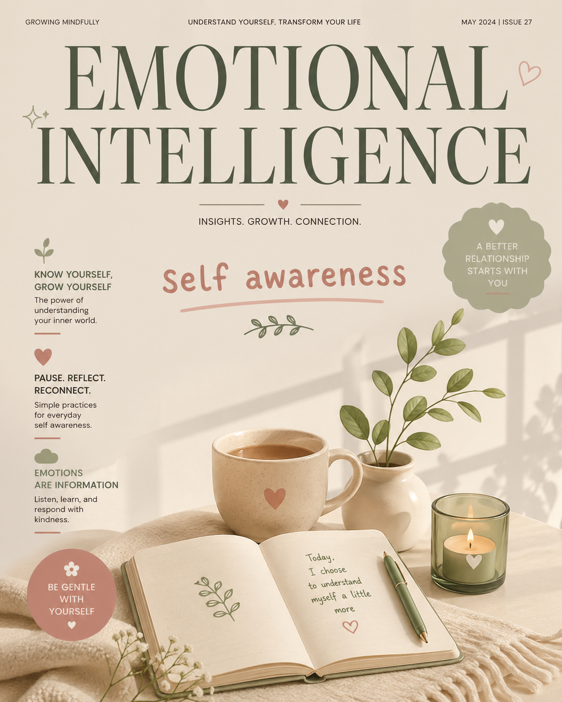
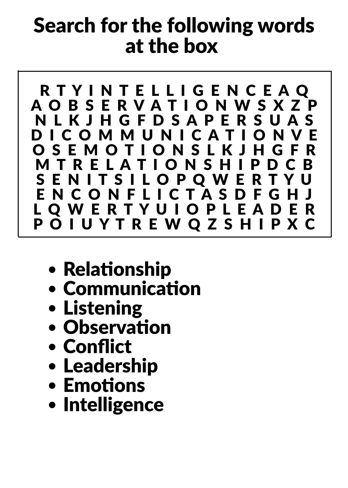

We often spend our days studying the world around us while remaining strangers to the person in the mirror. Psychologists now suggest that self-awareness—the quiet ability to recognize our own feelings as they happen—is the true foundation of emotional intelligence. It is more than just a passing mood. It is an honest internal check-in that happens before we speak or act. By tuning into our emotional state, we stop reacting to life’s stressors on autopilot and begin navigating our lives with more control and understanding.
Self-awareness involves recognizing emotions as they occur, rather than after we have already reacted. One way to develop this skill is by identifying triggers. A trigger is anything that sets off an emotion such as anger, sadness, stress, or anxiety. For example, being ignored by a friend might cause feelings of hurt. It is also important to notice patterns in behavior, such as realizing, “I always get quiet when I’m upset.” Developing self-awareness requires honesty and the willingness to acknowledge emotions instead of denying them. Without this awareness, emotions can feel automatic and difficult to control.
Emotional intelligence involves understanding what you are feeling, why you are feeling it, and how to manage those emotions. Self-awareness is a key part of this process because it directly influences thoughts and actions. When you are self-aware, you can recognize emotions in the moment—for instance, realizing you feel nervous because you are worried about a test, or noticing that certain situations lead to predictable reactions. Instead of responding automatically, self-awareness allows you to pause and understand what is happening internally. This makes it possible to respond calmly rather than react impulsively. In addition, understanding your own emotions can help you better understand others, leading to stronger and healthier relationships.
In conclusion, self-awareness is the foundation of emotional intelligence. By learning to recognize our feelings before reacting, we become more capable of managing our behavior and understanding others. When we learn to listen to our inner voice, we are better prepared to face the world around us.
1.Emotional intelligence includes the ability to recognize your own emotions.
2. People with high emotional intelligence never experience negative emotions.
3. Empathy is a key component of emotional intelligence.
4. Emotional intelligence is only useful in personal relationships, not at work.
5. Self-regulation means managing your reactions instead of acting impulsively.
6. Which of the following is NOT a component of emotional intelligence?
7. What does empathy allow you to do?
8. Someone with strong self-regulation is most likely to:
9. Which skill helps build healthy relationships?
10. Motivation in emotional intelligence refers to:
